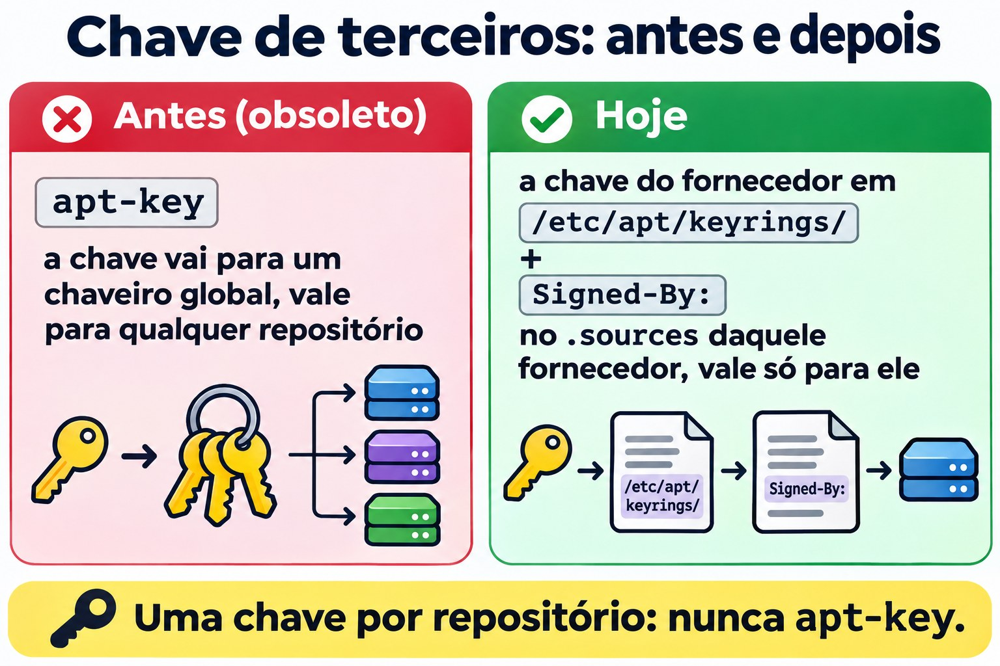

Aula 6.3 · Repositórios
Nas duas aulas anteriores você usou o apt e o dnf como se os pacotes caíssem do céu. Eles vêm de algum lugar: um endereço escrito num arquivo de configuração, um índice assinado e uma chave que o sistema decidiu confiar. Hoje você aprende a ler, adicionar, desligar e consertar essa cadeia, e a montar um repositório a partir da ISO para instalar sem internet.
Núcleo desta aula: ler e escrever um
.repo(Rocky) e um.sources(Debian), ligar e desligar repositório na hora e de vez, ativar o EPEL do jeito certo, entender onde fica a assinatura e criar um repositório local com a ISO. O resto é aprofundamento.
| Ficha | |
|---|---|
| Módulo | M6 · Software, aula 3 de 5 |
| Quando | Semana 10 |
| Ao final | Você sabe de onde vem cada pacote, em quem o sistema confia e como instalar com a internet fora |
| Pré-requisitos | Aulas 6.1 e 6.2 |
| Tempo | cerca de 2h30 |
| Snapshots | m6a3-inicio e m6a3-fim, nas duas VMs |
1 · Aquecimento
Responda antes de ler. Errar aqui é parte do método.
- Você baixa um pacote de um espelho (mirror) que ninguém conhece, na outra ponta do mundo. Quem garante que ele é o original?
- Dá para instalar pacotes num servidor sem nenhum acesso à internet?
- Um servidor Rocky tem cinco repositórios e um deles saiu do ar. O
dnf installdos outros quatro continua funcionando?
2 · Por que importa
| O chamado | A resposta errada | O que ela causa |
|---|---|---|
| "O dnf parou de funcionar, dá erro de metadata" | Apagar o .repo que deu erro sem ver qual era | Some um repositório de fornecedor e as atualizações dele param em silêncio |
"O tutorial mandou colar um curl ... | apt-key add" | Colar | A chave passa a valer para todos os repositórios, não só para o do fornecedor |
| "Preciso do htop na Rocky, não acho" | Baixar o .rpm de um site qualquer | Pacote sem assinatura conhecida e sem atualização futura |
| "O cliente não deixa o servidor sair para a internet" | "Então não dá para instalar nada" | Dá: repositório local com a ISO ou um espelho interno |
| "Deu erro de chave GPG" | gpgcheck=0 e pronto | Você desliga exatamente a proteção contra pacote adulterado |
3 · Modelo mental
Um repositório é uma loja com catálogo. O cliente (apt ou dnf) guarda uma lista de endereços de lojas e um chaveiro com os selos que ele aceita. Antes de comprar, ele baixa o catálogo, confere o selo e só então pega o pacote. Sem selo conhecido, não compra.
ROCKY (dnf) DEBIAN (apt)
/etc/yum.repos.d/*.repo /etc/apt/sources.list(.d/*.sources)
baseurl / mirrorlist / metalink URIs + Suites + Components
│ │
▼ ▼
repodata/repomd.xml (catálogo) dists/<suite>/InRelease (catálogo ASSINADO)
│ │ hashes
▼ ▼
pacote.rpm (cada pacote ASSINADO) Packages ──► pacote.deb (confere o hash)
│ │
gpgcheck=1 + gpgkey= Signed-By: chave em
/etc/pki/rpm-gpg/ /usr/share/keyrings ou /etc/apt/keyringsA diferença que mais cai: no mundo RPM, cada pacote é assinado. No Debian, quem é assinado é o índice (InRelease/Release), e os .deb são conferidos pelo hash que está nesse índice. O resultado é parecido, mas um .deb solto que você baixou não carrega assinatura própria.

4 · O essencial
Rocky: o arquivo .repo
Todo arquivo /etc/yum.repos.d/*.repo é lido (precisa terminar em .repo). Cada bloco [id] é um repositório:
[iso-baseos]
name=Rocky ISO - BaseOS
baseurl=file:///mnt/iso/BaseOS
enabled=1
gpgcheck=1
gpgkey=file:///etc/pki/rpm-gpg/RPM-GPG-KEY-Rocky-9| Campo | O que faz |
|---|---|
[id] | Nome curto, único no sistema inteiro. É o que você usa no --enablerepo |
name | Descrição para humanos |
baseurl | Endereço direto do repositório (http://, https://, file://). Ali dentro precisa existir repodata/ |
mirrorlist / metalink | Endereço de uma lista de espelhos. O dnf escolhe um. O metalink ainda traz hashes do catálogo |
enabled | 1 ligado, 0 desligado |
gpgcheck | 1 confere a assinatura de cada pacote. Deixe 1 |
gpgkey | Onde está a chave pública. Na primeira instalação o dnf mostra a impressão digital e pergunta |
skip_if_unavailable | Se o repositório cair, o dnf segue com os outros (na Rocky o padrão é False) |
priority | Menor número vence quando o mesmo pacote existe em dois repositórios (padrão 99) |
Variáveis que aparecem nos arquivos: $releasever (9, 10), $basearch (x86_64). Veja o valor com rpm -E %rhel e uname -m.
| Quero... | Comando |
|---|---|
| Ver todos, inclusive desligados | dnf repolist all |
| Detalhes de um | dnf repoinfo baseos |
| Ligar só nesta execução | dnf --enablerepo=crb install X |
| Usar só alguns | dnf --disablerepo='*' --enablerepo='iso-*' install X |
| Ligar / desligar de vez | sudo dnf config-manager --set-enabled crb / --set-disabled crb |
| Adicionar por URL | sudo dnf config-manager --add-repo URL |
| Refazer o cache de metadados | sudo dnf makecache / sudo dnf clean all |
| Chaves que o rpm confia | rpm -qa 'gpg-pubkey*' |
| Importar chave na mão | sudo rpm --import /caminho/ou/URL |
O config-manager vem no dnf-plugins-core. Se faltar, sudo dnf install dnf-plugins-core. Ele só edita o enabled= do arquivo, nada de mágico.
Rocky: EPEL e CRB
O EPEL (Extra Packages for Enterprise Linux) é o repositório da comunidade Fedora com milhares de pacotes que a Red Hat não distribui: htop, ncdu, fail2ban... Muitos dependem de bibliotecas de desenvolvimento que ficam no CRB (CodeReady Builder), que vem desligado. Por isso a ordem é:
sudo dnf config-manager --set-enabled crb
sudo dnf install epel-releaseO pacote epel-release instala o .repo e a chave. Nada de .rpm de site aleatório.
Debian: sources.list e o formato deb822
Duas formas, mesmo efeito:
# Uma linha (sources.list clássico, Debian 12 e anteriores)
deb [signed-by=/usr/share/keyrings/debian-archive-keyring.gpg] http://deb.debian.org/debian bookworm main contrib# deb822 (/etc/apt/sources.list.d/*.sources, padrão no Debian 13)
Types: deb
URIs: http://deb.debian.org/debian
Suites: trixie trixie-updates
Components: main contrib non-free-firmware
Signed-By: /usr/share/keyrings/debian-archive-keyring.gpg| Campo | O que é |
|---|---|
Types | deb (binários) e/ou deb-src (fontes) |
URIs | Endereço do espelho |
Suites | Versão: trixie, trixie-updates, trixie-security, trixie-backports (ou stable, que muda sozinho de versão: evite em servidor) |
Components | main (livre), contrib, non-free, non-free-firmware |
Signed-By | Qual chave pode assinar este repositório |
Enabled: no | Desliga sem apagar (só no deb822) |
No apt 3.0 (Debian 13), sudo apt modernize-sources converte o formato antigo para deb822.
Chaves de terceiros, do jeito certo: a chave do fornecedor vai para /etc/apt/keyrings/ (pasta sua) e o Signed-By: aponta para ela, só no .sources daquele fornecedor. O apt-key é obsoleto e foi removido nas versões novas: ele colocava a chave num chaveiro global, válido para qualquer repositório.


Backports: versões mais novas de alguns pacotes, compiladas para o seu Debian estável. Entram com prioridade 100, então nunca são escolhidas sozinhas. Você pede: sudo apt install -t trixie-backports pacote.
Repositório local com a ISO
A ISO DVD da Rocky já é um repositório: dentro dela estão BaseOS/ e AppStream/, cada um com o seu repodata/. A ISO mínima traz só uma parte. Montou, apontou o baseurl para file:///..., pronto. É assim que se instala em rede isolada, e é a base do Desafio do M6.
No Debian, a ISO também tem o índice assinado. O caminho clássico é apt-cdrom add com o disco montado, que acrescenta a entrada sozinho.
Rocky × Debian
| Assunto | Rocky (dnf) | Debian (apt) |
|---|---|---|
| Onde configurar | /etc/yum.repos.d/*.repo | /etc/apt/sources.list e /etc/apt/sources.list.d/*.sources ou *.list |
| O que é assinado | Cada .rpm | O índice InRelease/Release |
| Onde ficam as chaves | /etc/pki/rpm-gpg/ e o banco do rpm (gpg-pubkey) | /usr/share/keyrings/ (pacotes) e /etc/apt/keyrings/ (suas) |
| Ligar só agora | --enablerepo= / --disablerepo= | -t suite (escolhe a origem) |
| Desligar de vez | enabled=0 | Enabled: no ou comentar a linha |
| Atualizar catálogo | automático, ou dnf makecache | apt update, sempre |
| Pacotes extras | EPEL (+ CRB) | contrib, non-free, backports |
| Sem internet | .repo com baseurl=file:/// | apt-cdrom add ou URIs: file:/ |
| Quem tem prioridade | priority= | apt_preferences (pinning) |
No SUSE: zypper lr lista e zypper ar URL nome adiciona.
5 · Lab guiado
Passo 0 · Snapshot e pasta. No Proxmox:
qm snapshot 201 m6a3-inicio
qm snapshot 202 m6a3-inicioNas duas VMs: mkdir -p ~/lab63 && cd ~/lab63.
Parte A · rocky-lab
Passo 1 · Anatomia. Veja o que já existe antes de mexer:
dnf repolist all
ls /etc/yum.repos.d/
grep -v '^#' /etc/yum.repos.d/rocky.repo | grep -A8 '^\[baseos\]'
dnf repoinfo baseos | head -20
ls /etc/pki/rpm-gpg/
rpm -qa 'gpg-pubkey*'Repare: o baseos usa mirrorlist, não baseurl. O crb aparece como disabled. Cada gpg-pubkey-... é uma chave que o rpm já aceita. Veja de quem é uma: rpm -qi $(rpm -qa 'gpg-pubkey*' | head -1) | grep -i summary.
Passo 2 · Ligar e desligar. Primeiro só para um comando, depois de vez:
dnf --disablerepo='*' --enablerepo=baseos list --available | wc -l
dnf list --available | wc -l
sudo dnf config-manager --set-disabled appstream
grep -A6 '^\[appstream\]' /etc/yum.repos.d/rocky.repo | grep enabled
dnf repolist
sudo dnf config-manager --set-enabled appstreamO primeiro número é menor: só o BaseOS respondeu. O config-manager apenas trocou enabled=1 por enabled=0 no arquivo. Você poderia ter feito isso com um editor.
Passo 3 · CRB e EPEL. Do jeito certo, e prestando atenção na chave:
sudo dnf config-manager --set-enabled crb
sudo dnf install -y epel-release
cat /etc/yum.repos.d/epel.repo | grep -E '^\[|gpgkey|gpgcheck'
rpm -qa 'gpg-pubkey*' | wc -l
sudo dnf install htopNo último comando não use -y. O dnf vai mostrar Importing GPG key com o nome e a impressão digital (fingerprint) da chave do EPEL e perguntar. Leia antes de responder y. Depois:
rpm -qa 'gpg-pubkey*' | wc -l
dnf info htop | grep -i repoUma chave a mais, e o htop veio do epel.
Passo 4 · Repositório local com a ISO. No Proxmox, ache a ISO da Rocky e coloque no CD-ROM da VM:
pvesm status --content iso
pvesm list <storage-de-iso> --content iso | grep -i rocky
qm set 201 --ide2 <storage-de-iso>:iso/<arquivo-da-rocky>.iso,media=cdromNa rocky-lab:
lsblk | grep rom
sudo mkdir -p /mnt/iso
sudo mount -o ro /dev/sr0 /mnt/iso
ls /mnt/iso
ls /mnt/iso/BaseOSTem que aparecer BaseOS/ e AppStream/, cada um com repodata/. Agora o .repo:
V=$(rpm -E %rhel)
sudo tee /etc/yum.repos.d/iso.repo >/dev/null <<EOF
[iso-baseos]
name=Rocky ISO - BaseOS
baseurl=file:///mnt/iso/BaseOS
enabled=1
gpgcheck=1
gpgkey=file:///etc/pki/rpm-gpg/RPM-GPG-KEY-Rocky-$V
[iso-appstream]
name=Rocky ISO - AppStream
baseurl=file:///mnt/iso/AppStream
enabled=1
gpgcheck=1
gpgkey=file:///etc/pki/rpm-gpg/RPM-GPG-KEY-Rocky-$V
EOF
cat /etc/yum.repos.d/iso.repo
dnf repolistTeste usando só a ISO, como se a internet não existisse:
dnf --disablerepo='*' --enablerepo='iso-*' list --available | head
sudo dnf --disablerepo='*' --enablerepo='iso-*' install -y tmux
dnf info tmux | grep -i repoSe a sua ISO for a mínima e o tmux não estiver nela, escolha outro pacote da lista do primeiro comando. O From repo tem que dizer iso-baseos ou iso-appstream.
Parte B · debian-lab
Passo 5 · Anatomia.
. /etc/os-release; echo $VERSION_CODENAME
cat /etc/apt/sources.list 2>/dev/null | grep -v '^#'
ls /etc/apt/sources.list.d/
cat /etc/apt/sources.list.d/*.sources 2>/dev/null
ls /usr/share/keyrings/ /etc/apt/keyrings/ 2>/dev/null
apt-cache policy | head -20No apt-cache policy, cada origem aparece com um número de prioridade (500 para as normais) e a linha release mostra a suite (n=trixie) e o componente.
Passo 6 · Backports em deb822.
. /etc/os-release
sudo tee /etc/apt/sources.list.d/backports.sources >/dev/null <<EOF
Types: deb
URIs: http://deb.debian.org/debian
Suites: ${VERSION_CODENAME}-backports
Components: main
Signed-By: /usr/share/keyrings/debian-archive-keyring.gpg
EOF
sudo apt update
apt-cache policy | grep -B1 backportsRepare no 100: o backports é consultado, mas nunca vence sozinho. Para ver na prática, procure um pacote que tenha versão nova lá e compare:
apt list -a 2>/dev/null | grep -- "-backports" | head -5
apt-cache policy <um-pacote-da-lista>O Candidate: continua sendo a versão normal. Instalar a do backports exigiria -t ${VERSION_CODENAME}-backports. Não instale.
Passo 7 · Desligar sem apagar. Acrescente Enabled: no ao bloco e confira:
echo 'Enabled: no' | sudo tee -a /etc/apt/sources.list.d/backports.sources
sudo apt update
apt-cache policy | grep -c backportsO contador vai a zero.
Limpeza
Rocky: mantenha o EPEL e o CRB (você vai usar). Desmonte a ISO e desligue o repositório dela, para ele não quebrar o dnf no próximo boot:
sudo dnf config-manager --set-disabled iso-baseos iso-appstream
sudo umount /mnt/isoDebian: o backports.sources fica, desligado. Ele é útil depois.
Decida 1
Você precisa do ncdu num servidor Rocky de produção. Ele só existe no EPEL. A instalação do epel-release deu erro de chave GPG por causa de um proxy que corrompe downloads. O que você faz?
A) Instala com gpgcheck=0 só dessa vez, depois volta para 1. B) Resolve o proxy, instala epel-release normalmente e deixa o gpgcheck=1. C) Baixa o ncdu.rpm de um site de pacotes e instala com rpm -i.
Marque uma opção antes.
| Se você marcou | Resultado | Por quê |
|---|---|---|
| A | Funciona, e você instalou algo que não sabe se é o original | O erro de chave é justamente o aviso de que o arquivo chegou diferente. Desligar a checagem é ignorar o alarme |
| B | Certo | O problema é o proxy. Com ele resolvido, a assinatura confere e você ainda ganha as atualizações futuras do EPEL |
| C | Funciona hoje, apodrece amanhã | Sem repositório não há atualização de segurança, e a origem é desconhecida |
Para fixar: erro de assinatura é um sintoma. Conserte a causa, nunca o alarme.
Decida 2
O tutorial de um fornecedor manda rodar, no Debian:
curl -fsSL https://fornecedor.example/key.gpg | sudo apt-key add -
echo "deb https://fornecedor.example/apt stable main" | sudo tee /etc/apt/sources.list.d/fornecedor.listA) Roda como está, o tutorial é do próprio fornecedor. B) Salva a chave em /etc/apt/keyrings/fornecedor.gpg e usa Signed-By: com ela só no .sources do fornecedor. C) Pula a chave e coloca [trusted=yes] na linha.
Marque uma opção antes.
| Se você marcou | Resultado | Por quê |
|---|---|---|
| A | Pode nem rodar (o apt-key sumiu das versões novas), e onde roda abre uma porta | A chave vira confiável para qualquer repositório. Quem tiver essa chave pode assinar um falso "pacote do Debian" |
| B | Certo | A chave vale só para aquele repositório. É o que a própria documentação do Debian recomenda hoje |
| C | Pior de todas | trusted=yes desliga a verificação daquele repositório. Qualquer um no caminho pode trocar os pacotes |
Para fixar: uma chave, um repositório. Se a chave vier em texto (ASCII armored), converta com gpg --dearmor ou salve como .asc.
6 · Quebre e conserte
Quebra 1 · Um repositório derruba o dnf inteiro (rocky-lab)
Crie um repositório com endereço errado:

sudo tee /etc/yum.repos.d/quebrado.repo >/dev/null <<'EOF'
[quebrado]
name=Repo com URL errada
baseurl=https://repo.invalido.example/el9/
enabled=1
gpgcheck=1
EOF
sudo dnf makecacheSintoma: Failed to download metadata for repo 'quebrado' e o dnf para, mesmo para pacotes de outros repositórios.
Diagnóstico: a mensagem diz o id. Ache o arquivo com grep -l '^\[quebrado\]' /etc/yum.repos.d/*.repo e teste o endereço com curl -I <baseurl>/repodata/repomd.xml.
Conserto, do mais rápido ao definitivo:
- Para trabalhar agora:
sudo dnf --disablerepo=quebrado install X. - Se o repositório cai de vez em quando e não é essencial:
skip_if_unavailable=Truenaquele bloco. - Se a URL está errada: corrija o
baseurl. Se o repositório não existe mais:enabled=0ou remova o arquivo, depois de saber de quem era.
No lab, remova: sudo rm /etc/yum.repos.d/quebrado.repo.
Na vida real: é o chamado clássico depois que um fornecedor muda de endereço. Antes de apagar, anote o que o repositório entregava (dnf list --installed | grep @quebrado).
Quebra 2 · Chave errada no Signed-By (debian-lab)
Ligue o backports de novo e aponte o Signed-By para um arquivo que não existe:
sudo sed -i '/^Enabled:/d; s|^Signed-By:.*|Signed-By: /etc/apt/keyrings/nao-existe.gpg|' /etc/apt/sources.list.d/backports.sources
sudo apt updateSintoma: o apt update reclama que não conseguiu verificar a assinatura daquele repositório (erro de GPG, NO_PUBKEY ou falha ao abrir a chave) e ignora o índice dele.
Diagnóstico: a mensagem cita a URL e a suite. grep -r Signed-By /etc/apt/sources.list.d/ e ls -l no arquivo apontado.
Conserto: volte o Signed-By para /usr/share/keyrings/debian-archive-keyring.gpg e rode sudo apt update. Depois desligue de novo com Enabled: no.
Na vida real: acontece quando a chave de um fornecedor expira ou é trocada. O conserto é baixar a chave nova pelo canal oficial dele, nunca trusted=yes.
Quebra 3 · A ISO sumiu depois do reboot (narrativa)
Você deixou o iso.repo ligado, montou a ISO na mão e reiniciou. O mount não sobrevive ao boot, então o dnf procura /mnt/iso/BaseOS/repodata e não acha: Failed to download metadata for repo 'iso-baseos' (às vezes com Curl error (37)).
Conserto: ou o repositório é temporário (deixe enabled=0 e use --enablerepo quando montar), ou é permanente e a montagem vai para o /etc/fstab. A segunda opção é parte do Desafio do M6.
7 · Armadilhas
| Armadilha | O que acontece | Como evitar |
|---|---|---|
gpgcheck=0 "só para testar" | Fica para sempre, ninguém lembra | Se precisar mesmo, coloque um comentário com data e motivo |
baseurl apontando para a raiz da ISO | Cannot download repomd.xml: a raiz não tem repodata/ | Aponte para BaseOS/ e AppStream/, um bloco cada |
Arquivo em yum.repos.d sem .repo no fim | O dnf ignora em silêncio | ls /etc/yum.repos.d/ e dnf repolist depois de criar |
Dois blocos com o mesmo [id] | Um sobrescreve o outro, ou dá aviso | id único e descritivo |
| EPEL sem CRB | Pacote do EPEL falha por dependência que "não existe" | Ligue o crb antes |
.repo de versão 8 copiado para a 9 | Pacotes de outra versão, dependências quebradas | Confira $releasever e o caminho da URL |
apt-key add ou trusted=yes | Confiança global ou nenhuma | /etc/apt/keyrings/ + Signed-By |
Misturar testing ou sid no estável | "FrankenDebian": um upgrade puxa meio sistema novo | Para versão nova de um pacote, use backports |
Mesmo repositório em dois arquivos com Signed-By diferentes | Conflicting values set for option Signed-By e o apt update para | Uma entrada por repositório; grep -r a URL antes de adicionar |
Usar stable em vez do codinome | No lançamento de uma versão nova, o apt upgrade vira upgrade de versão | Use o codinome (trixie) |
8 · Quiz
Responda sem olhar. O gabarito está no fim da aula.
- Qual a diferença entre
baseurlemirrorlist? - O
dnf installpara comFailed to download metadata for repo 'fornecedor-x'. O que você faz para instalar agora, e quais as opções definitivas? - Por que, na Rocky 9, a instalação do EPEL pede para ligar o CRB antes?
- No Debian, o que é assinado: cada
.debou o índice? Que consequência isso tem para um.debsolto? - O que o
Signed-By:faz que oapt-key addnão fazia? - A file in /etc/yum.repos.d/ is read by dnf only if its name ends with: a) .conf b) .repo c) .list d) .sources
9 · Cola
Para saber de cor:
| Quero... | Comando |
|---|---|
| Listar repositórios (Rocky) | dnf repolist all |
| Usar só alguns agora | dnf --disablerepo='*' --enablerepo=ID install X |
| Ligar / desligar de vez | sudo dnf config-manager --set-enabled ID / --set-disabled ID |
| EPEL | sudo dnf config-manager --set-enabled crb e sudo dnf install epel-release |
Campos mínimos de um .repo | [id], name, baseurl, enabled, gpgcheck, gpgkey |
| Origens e prioridades (Debian) | apt-cache policy |
Campos de um .sources | Types, URIs, Suites, Components, Signed-By |
| Chave de terceiro (Debian) | /etc/apt/keyrings/nome.gpg + Signed-By |
Para consultar:
| Quero... | Comando |
|---|---|
| Detalhes de um repositório | dnf repoinfo ID |
| Adicionar por URL | sudo dnf config-manager --add-repo URL |
| Refazer cache | sudo dnf clean all && sudo dnf makecache |
| Chaves aceitas pelo rpm | rpm -qa 'gpg-pubkey*' |
| Importar chave | sudo rpm --import ARQUIVO_OU_URL |
| Montar a ISO | sudo mount -o ro /dev/sr0 /mnt/iso |
| Trocar a ISO da VM (Proxmox) | qm set VMID --ide2 STORAGE:iso/ARQ.iso,media=cdrom |
| Instalar do backports | sudo apt install -t CODINOME-backports X |
| Desligar fonte (deb822) | Enabled: no |
| Converter para deb822 | sudo apt modernize-sources (apt 3.0+) |
| Converter chave texto | gpg --dearmor < key.asc > key.gpg |
| CD/ISO no Debian | sudo apt-cdrom add |
| SUSE | zypper lr, zypper ar URL nome |
Flashcards:
- Onde fica a assinatura? → RPM: em cada pacote. APT: no índice (InRelease).
--enablerepo×config-manager --set-enabled→ um comando só × grava no arquivo.- Backports instala sozinho? → Não. Prioridade 100, só com
-t. - Erro de GPG → sintoma; conserte a causa, nunca desligue a checagem.
- Repositório da ISO → um bloco por pasta (
BaseOS,AppStream),baseurl=file:///....
10 · Checklist e fechamento
- [ ] Leio um
.repoe um.sourcese digo de onde vem cada pacote - [ ] Ligo e desligo repositório só para um comando e de vez
- [ ] Ativo o EPEL com CRB e reconheço a pergunta de importar chave
- [ ] Escrevo um
.repodo zero para a ISO e instalo usando só ele - [ ] Sei por que
apt-keyetrusted=yessão má ideia - [ ] Conserto um repositório quebrado sem apagar às cegas
Último exercício, sem olhar a aula: na rocky-lab, monte a ISO de novo, escreva um .repo novo chamado meu-iso.repo só com o AppStream e o id meu-appstream, e instale um pacote usando apenas ele. Depois desligue esse repositório e desmonte a ISO.
Reboot e conferência:
# rocky-lab
sudo reboot
dnf repolist # nenhum iso-* ligado, epel e crb ligados
sudo dnf makecache # sem erro
# debian-lab
sudo apt update # sem erro e sem aviso de GPGSnapshot de fim (no Proxmox):
qm snapshot 201 m6a3-fim
qm snapshot 202 m6a3-fim11 · Na vida real
Missão, só leitura. Num servidor Rocky/RHEL e num Debian/Ubuntu que você já administra, rode apenas isto. Nada de adicionar, ligar ou desligar repositório.
# RHEL-like
dnf repolist all
grep -H -E 'gpgcheck|skip_if_unavailable' /etc/yum.repos.d/*.repo
rpm -qa 'gpg-pubkey*' --qf '%{NAME}-%{VERSION} %{SUMMARY}\n'
# Debian-like
grep -rhv '^#' /etc/apt/sources.list /etc/apt/sources.list.d/ 2>/dev/null | grep .
grep -rn 'trusted=yes' /etc/apt/ 2>/dev/null
ls -l /etc/apt/keyrings/ /etc/apt/trusted.gpg.d/ 2>/dev/null
apt-cache policy | grep -E '^ *[0-9]+ ' | sort -uPerguntas para responder:
- Quantos repositórios de terceiros existem? Você sabe para que serve cada um?
- Algum com
gpgcheck=0outrusted=yes? Desde quando e por quê? - Tem chave em
/etc/apt/trusted.gpg.d/(confiança global, estilo antigo)? - Algum Debian apontando para
stable,testingousidem vez do codinome? - Algum repositório de versão antiga (el8 numa máquina 9, bullseye num bookworm)?
Diário: monte uma tabela por servidor: repositório, para que serve, quem pediu, chave usada. É o tipo de documento que salva uma migração.
Amanhã, sem olhar: escreva de memória um .repo com seis linhas e um .sources com cinco.
12 · Aprofundar quando quiser
createrepo_c: transforma uma pasta de.rpmem repositório (gera orepodata/). Junto comdnf download --resolveoureposync, é como se monta um repositório próprio ou um espelho para rede isolada.- Servir por HTTP: a mesma pasta, publicada com nginx ou Apache, vira o repositório de todas as VMs da rede (
baseurl=http://...). - Espelhos e caches corporativos:
apt-cacher-ngeaptlyno mundo Debian. Pulp, Foreman/Katello e Red Hat Satellite no mundo RHEL. - Pinning (
/etc/apt/preferences.d/): controlar quem vence entre repositórios comPin-Priority. Poderoso e fácil de errar. repo_gpgcheck=1: além dos pacotes, confere a assinatura do próprio catálogo na Rocky.- ISO do Debian como repositório:
apt-cdrom addouURIs: file:/mnt/isono.sources.
DeepTutor (http://10.1.0.149:3782, KB "Curso Linux Sysadmin"):
!explica por que o Debian assina o índice e o RHEL assina cada pacote!feynman o que o Signed-By resolve que o apt-key não resolvia!quiz Aula 6.3, 5 perguntas sobre .repo, .sources e repositório local
Gabarito comentado
Aquecimento
- A assinatura. O espelho só entrega arquivos. Quem confere é o seu sistema, com a chave pública da distribuição que ele já tem. Na Rocky, cada
.rpmé assinado. No Debian, o índice é assinado e traz o hash de cada.deb. Um espelho malicioso não consegue assinar sem a chave privada. - Sim. Com um repositório local: a ISO montada (
baseurl=file:///...na Rocky,apt-cdromno Debian) ou um espelho interno na rede. - Não, por padrão. Na Rocky o
skip_if_unavailableéFalse: um repositório fora do ar faz o dnf parar. Use--disablerepo=IDna hora, ouskip_if_unavailable=Truenaquele bloco se ele for opcional.
Quiz
- O
baseurlé o endereço direto de um repositório. Omirrorlist(oumetalink) é o endereço de uma lista de espelhos, e o dnf escolhe um. Ometalinkainda traz hashes do catálogo, um controle a mais. - Agora:
sudo dnf --disablerepo=fornecedor-x install X. Depois: descobrir por que caiu (curl -Ina URL). Se mudou de endereço, corrigir obaseurl. Se é opcional e instável,skip_if_unavailable=True. Se morreu,enabled=0, depois de saber quem dependia dele. - Porque vários pacotes do EPEL dependem de bibliotecas e ferramentas que a Rocky só distribui no CRB, que vem desligado. Sem ele, a instalação falha por dependência "inexistente".
- O índice (
InRelease/Release). Os.debsão conferidos pelo hash que está no índice assinado. Um.debsolto, baixado fora do apt, não tem essa cadeia: odpkg -iinstala sem saber se é original. - Liga a chave a um repositório. Com o
apt-key add, a chave entrava no chaveiro global e passava a valer para qualquer origem, inclusive para assinar um falso pacote do Debian. - b) .repo. O
.confé o/etc/dnf/dnf.conf. Os.liste.sourcessão do apt.